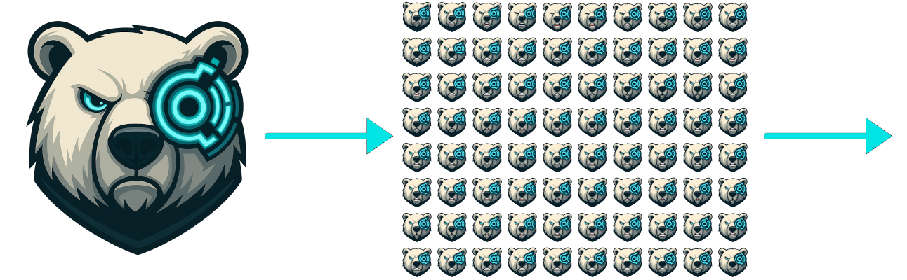
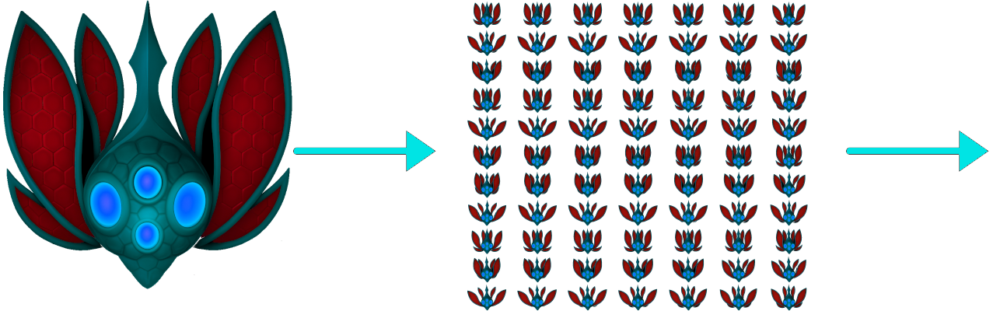
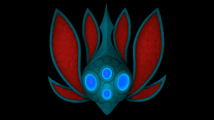
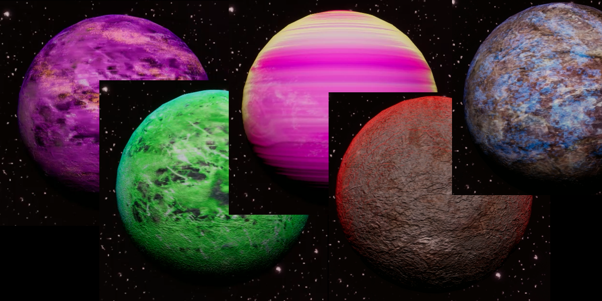
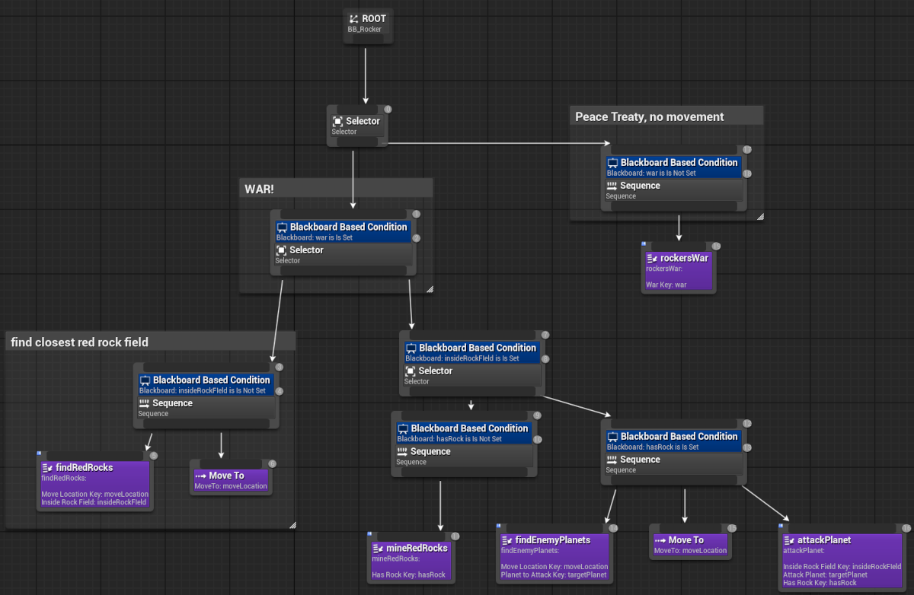

Leveraging AI for Art Assets
In the examples below, I used AI to generate consistent spritesheets to be imported into UNreal Engine 5 and used as flipbooks or materials. Here are some of the steps taken:

- I generated images in a style that fits the feel of the game (image-to-image), then touched up the images
- I used that image as reference to animate using Veo 3 (image-to-video)
- I edited the videos in DaVinci Resolve to create seamless loops
- I used a GIF-to-spritesheet converter for the final export
|  | |
|  |  |
Procedurally Generated Content
I created procedurally generated Levels and planets (in addtion to hand crafted levels and planets). The planets are a combination of different materials: surface, bump, sky and atmosphere(added color hue). A combination of those 4 materials creates many different varieties.

Behavior Tree Principles
I have an understanding of behavior tree principles. In my game there Red Rockers and Green rockers that use behavior trees. There can be dozens of rockers on the screen at the same time. There is logic where if actions are interupted to fallback to a previous step.
